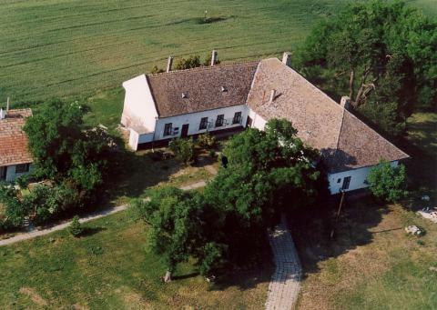
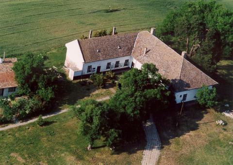

A MAGYAR faj költői ereje Vörösmarty Mihályban bontakozott ki először igazi színpompával. Szellemi nagyság volt, különb elődeinél, a líra és az epika méltán ünnepelt mestere, valamennyi kortársánál ékesebben szóló drámaíró. 1800 december 1-én született Fehér megye egyik kis falujában, Kápolnásnyéken, katolikus nemescsaládból. Atyja, idősebb Vörösmarty Mihály, gazdatiszt volt gróf Nádasdy Mihály kápolnásnyéki birtokán, a grófot tizenöt évig szolgálta, később földet bérelt a grófi uradalomtól s a maga hasznára gazdálkodott a Nyék mellett fekvő Velence községben. Boldog házasságban élt feleségével, a szintén nemescsaládból származó Csáthy Annával; szigorú erkölcsi elvek szerint nevelte kilenc gyermekét.